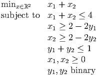

Solution: Problem bb2 is
Solution to LP relaxation is = (9∕5, 23∕10, 7∕10), = -19.4. We let
Branch on x1 first:

Optimal solution is x* = (2, 2, 1), z* = -19.
Solution: x1 ≤ 0.5(x2 + x3).
Note: the LP relaxation is tighter if we use two constraints: x1 ≤ x2 and x1 ≤ x3. We can get an appropriate single inequality by taking any positive linear combination of the two inequalities.
Solution: We give 2 formulations, each of which needs on the order of 100 variables.
- i.
- We introduce 10 integer variables x to represent the 10 positions. Each variable can take
a value between 0 and 9. For each index pair 1 ≤ i < j ≤ 10, we introduce binary
variables yij and zij, with the meaning
The formulation is

where the objective function calculates the value of the difference. We ensure the difference is nonnegative through the symmetry-breaking constraint x1 - x6 ≥ 1, and then minimize the difference.
- ii.
- We use just binary variables. They are
The formulation is
This is an assignment problem with one additional constraint for symmetry breaking. The extra constraint ensures the first digit in the upper number is larger than the first digit in the lower number.
Solution:
- a.
- Problem is
or equivalently

- b.
-

Solution:

The upper bounds on xj come from the first three constraints.
- a.
- Derive a Gomory cutting plane from each constraint and verify that it is violated by the solution to the current LP relaxation.
- b.
- Add the Gomory cut corresponding to the second constraint and reoptimize. What do you conclude?
Solution:
- a.
- First constraint:
Violated by x = (,
 , 0, 0).
, 0, 0).
Second constraint:
Violated by x = (,, 0, 0).
- b.
- Add the fractional formulation of the second Gomory cut to the tableau and reoptimize
using dual simplex:

Solution to the updated relaxation is x* = (2, 3, 1, 0, 0) with value z* = 14. Since this is integer, it solves the integer program.